HIDDEN ANDHRA
Discover the Andhra Beyond the Usual.
Discover the Andhra Beyond the Usual.
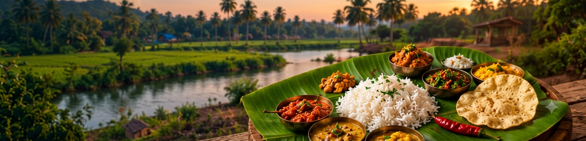
From traditional recipes to street delights,
Andhra's food is a journey of flavor,
culture and tradition.
A taste of Andhra you must try
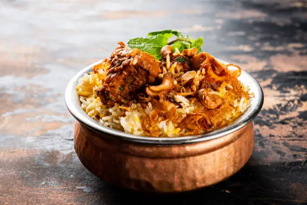
Aromatic basmati rice layered with rich spices and tender meat. A signature Andhra dish known for its bold and fiery flavors.
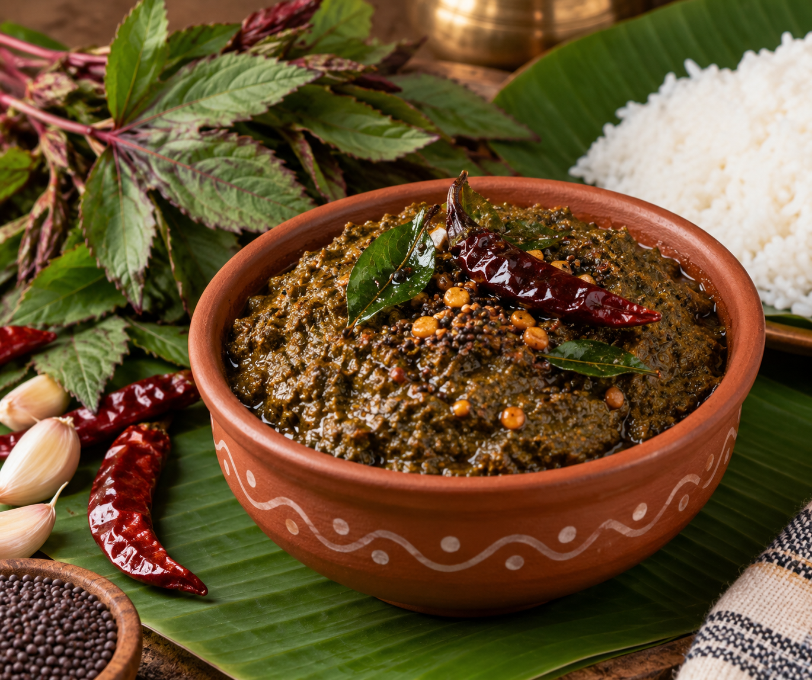
A tangy chutney made from fresh sorrel leaves and traditional spices. A beloved Andhra condiment that adds zest to every meal.
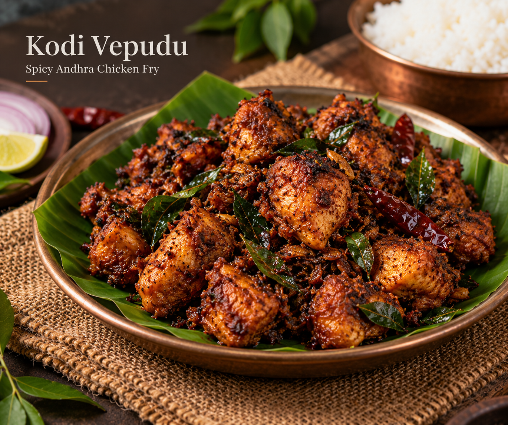
Spicy Andhra-style chicken fry cooked with roasted spices. Crispy, flavorful, and a favorite among spice lovers.
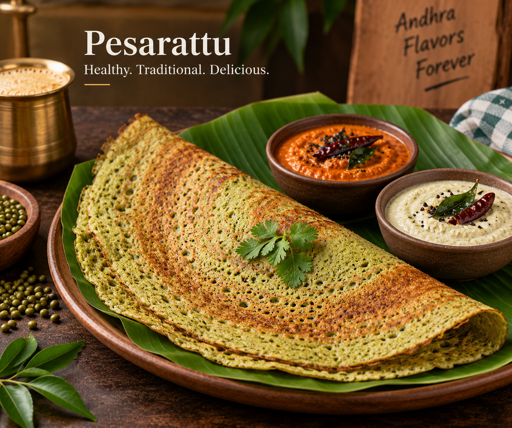
A healthy green gram dosa served with ginger chutney. A nutritious breakfast that combines taste and tradition.
Every region in andhra has a unique taste
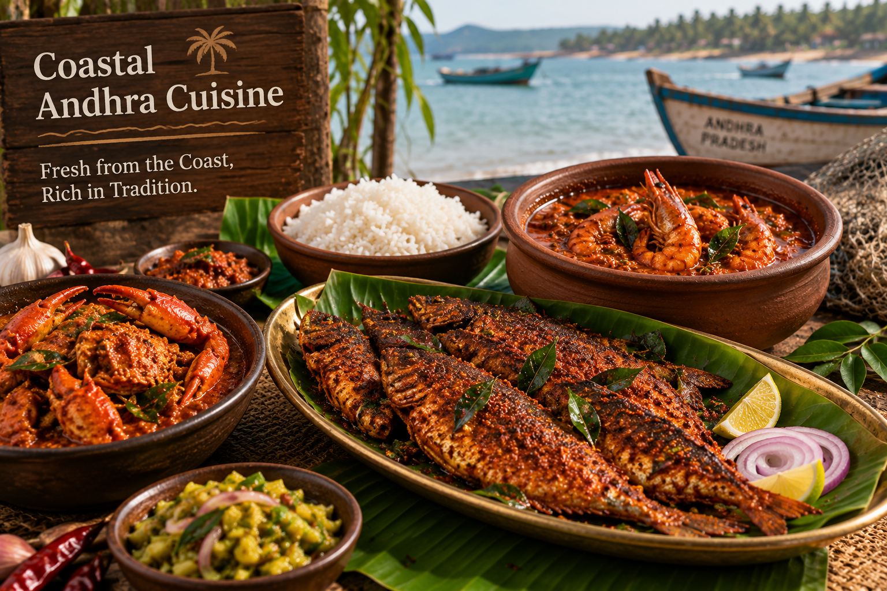
Famous for fresh seafood, tangy curries, and aromatic spices. A culinary experience inspired by the Bay of Bengal coastline.
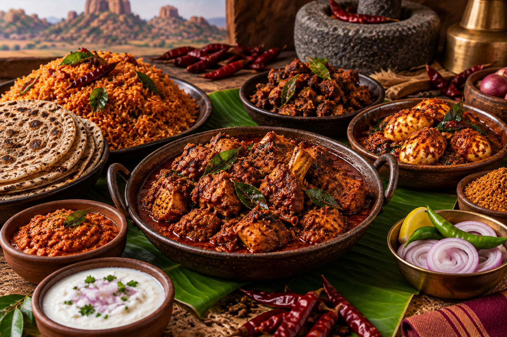
Known for its fiery flavors and rich traditional recipes. Perfect for those who enjoy bold and spicy food.
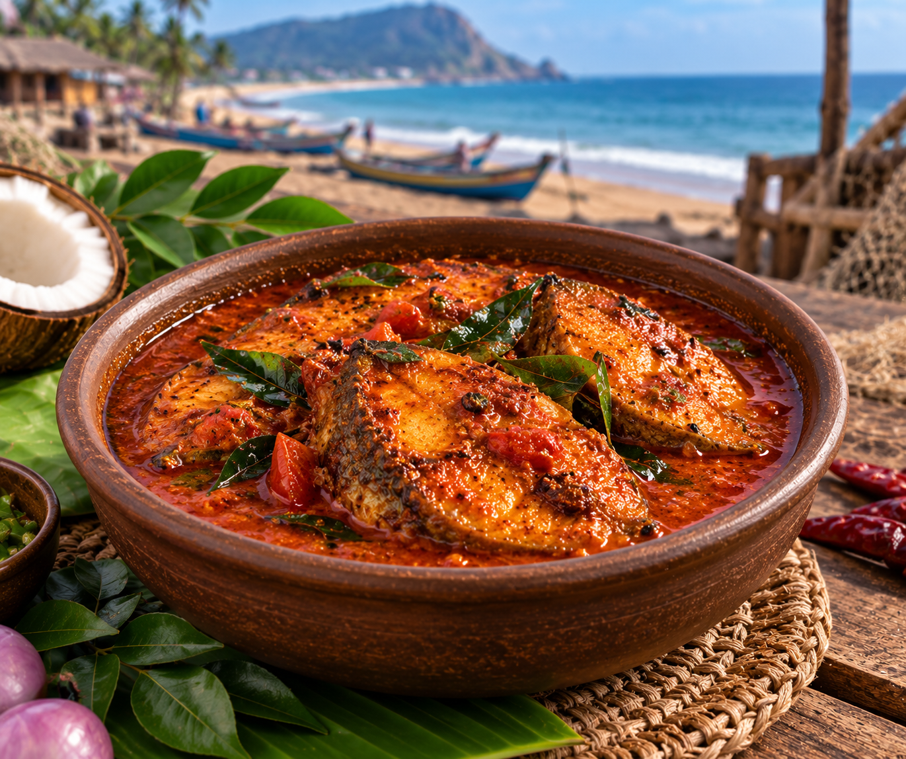
A blend of coastal freshness and traditional village cooking. Offers unique flavors passed down through generations.
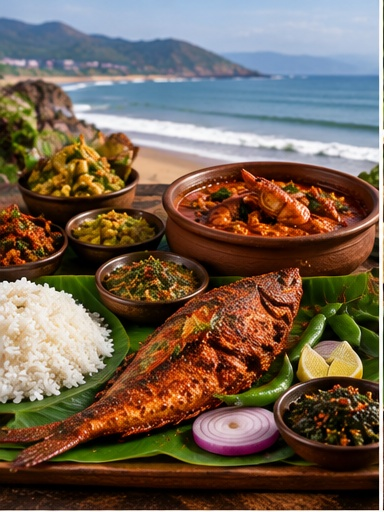
Renowned for its rich flavors, seafood, and festive dishes. A perfect reflection of Andhra's culinary heritage.
Quick Bites and Sweets from Andhra
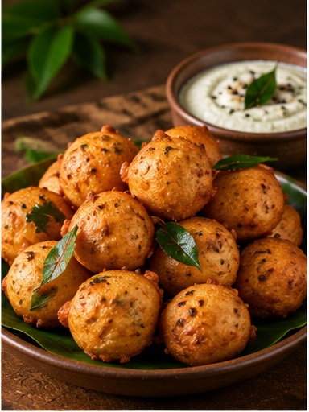
Aromatic basmati rice layered with rich spices and tender meat. A signature Andhra dish known for its bold and fiery flavors.
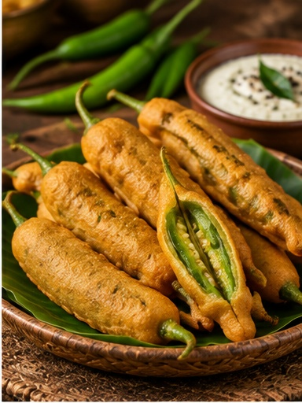
Green chilies stuffed and coated in a crispy gram flour batter. A spicy street-food delight loved across Andhra Pradesh..
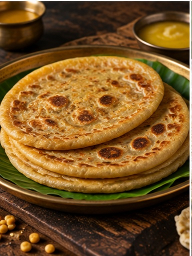
A sweet flatbread filled with jaggery and lentil stuffing. Prepared during festivals and special family celebrations.
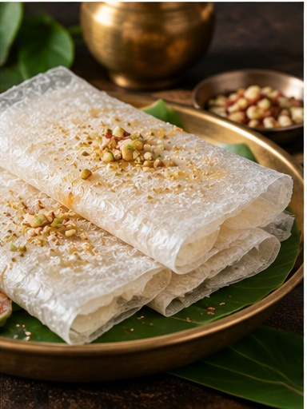
Paper-thin rice starch sheets layered with sugar and ghee. A unique Andhra sweet known for its delicate texture.p>
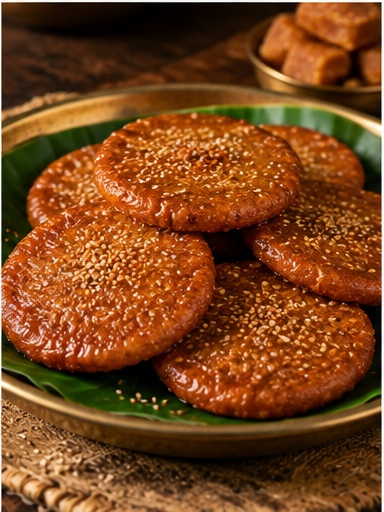
Traditional rice flour and jaggery sweet deep-fried to perfection. An essential festive delicacy in Andhra households.
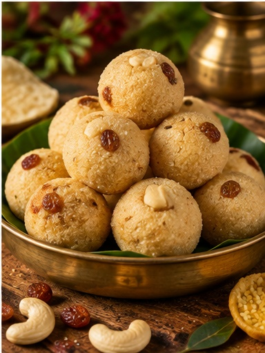
Soft semolina laddus flavored with cardamom and nuts. A simple yet delightful sweet enjoyed on festive occasions.